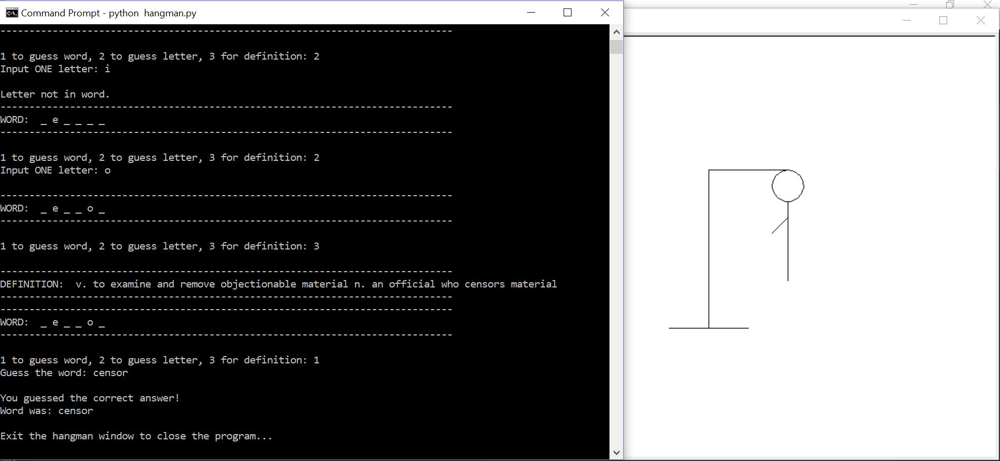

Education
Bachelor of Science in Computer Science
Decemember 2017
University of Houston-Clear Lake, Houston, TX
GPA: 3.3/4.0
Related Coursework
- Web Development:
- Web Application Development
- Programming:
- Programming Fundamentals I (C#)
- Programming Fundamentals II (Visual Basic)
- Computer Science II (Java)
- Data Structures
- Advanced Data Structures
- Software Engineering
- Numerical Methods
- Computer Org & Assembly Language
- Advanced Software Development with .NET & C#
- Operating Systems:
- Computer Systems Administration (Linux)
- Operating Systems (C)
- Database:
- Design of Database Systems
- Project Management:
- Modern Systems Analysis & Design
Experience
Bridges to Stem Careers (BSC) MentorFall 2017 University of Houston-Clear Lake
- Tutor and mentor students during office hours
- Help students with code debugging
- Assist Computer Science professors and reinforce lessons taught to students
- Research and present a lecture for Tech Friday
- Provide guidance/advice to students for obtaining degree requirements
Sales AssociateSpring 2017
Teaching Cottage
- Provided customer service to patrons by helping with educational selections
- Replenished merchandise and organized workstation during peak times
- Accomplished multitasking in different roles throughout store
Skills
- Programmed in Java, C, C#, Python, and Visual Basic
- Coded in HTML and CSS
- Efficient with Windows OS
- Productive in Linux OS (Fedora Distro)
- Experience with version control using Git and GitHub
- Constructed a home file server through Linux (Fedora Distro) and Samba
- Knowledge of jQuery functions
- Built databases using MySQL
- Effective with Microsoft Office
Projects
Hangman Python App
- Converted command line interface to graphical user interface with Tkinter
- Employs turtle graphics
- Compatible with Windows and Linux
- Git & GitHub used for version control
- Source Code: Hangman Repository
Phase 1: Command Line
Phase 2: GUI

Android Bluetooth Tracking App (Senior Project)
- Application pushes a notification to your Android phone when a connected Bluetooth device is out of range
- Prototyped and constructed the UI/UX with team members
- Coded using Java and Android Studio IDE
- Performed documentation throughout the project lifecycle
- Oversaw version control
- Source Code: Phone Wallet Keys Repository
Phone Wallet Keys Website
- Converted command line interface to graphical user interface with Tkinter
- Employs turtle graphics
- Compatible with Windows and Linux
- Git & GitHub used for version control
- Website: PWK Website
- Source Code: PWK Website Repository

For current webpage & my other project's source code: Click Here!
Interest